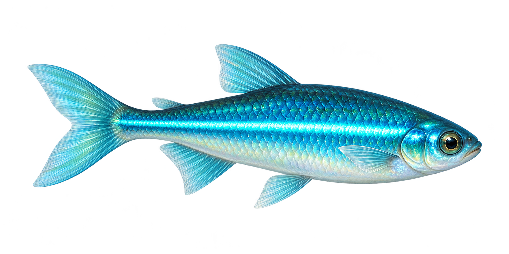
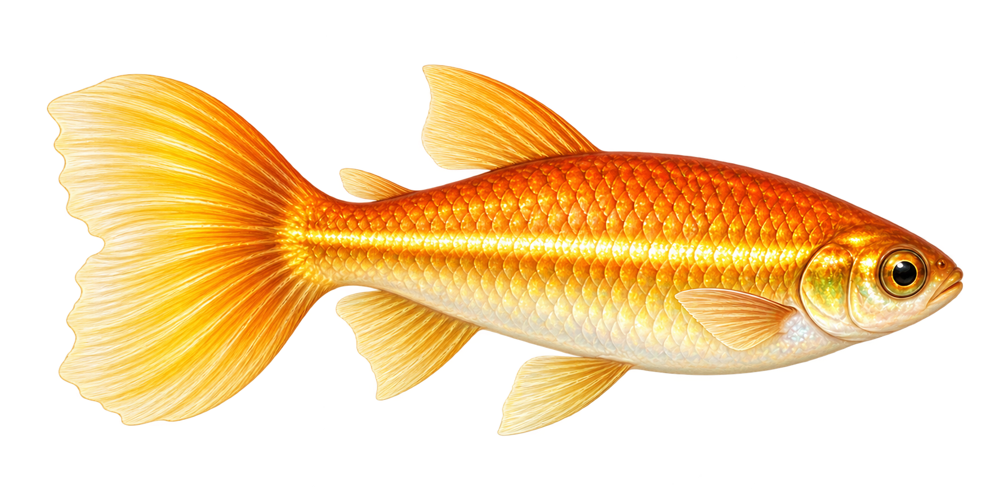

Lớn lên từng chút,
qua mỗi mùa.
Nuôi một hệ sinh thái sống — từ hồ kính đầu tiên đến trạm ngắm tuyết trên Everest. Theo dõi từng asset, hoàn thiện từng đợt.
Khám phá bối cảnh ↗Xem danh mục ↓

Mỗi đợt, một điều mới.
Nhịp đề xuất theo ngày chơi.
Chưa chốt lịch phát hành thực tế.
Sản xuất: làm xong → kiểm tra → bạn duyệt → phát hành. Trong game: mở nội dung theo số ngày chơi, kết hợp nhiệm vụ chăm hồ. Nội dung đã mở nên giữ vĩnh viễn; không phạt người chơi bỏ lỡ một ngày. Cơ chế mở khóa chưa được lập trình.
Từng mảnh ghép của hồ.
Bấm vào dòng để sửa trạng thái và ghi chú. Thay đổi lưu trên trình duyệt này, chưa đồng bộ thiết bị hoặc tự cập nhật từ cuộc trò chuyện.
| Mã | Asset | Trạng thái | Đợt | Ghi chú |
|---|
Chiếc hồ, ở một nơi khác.
Bốn cảnh mới là phác thảo bằng mã để duyệt bố cục. Hồ ở trong không gian quan sát có kiểm soát nhiệt độ; cá nước ngọt không được thả ra biển hoặc ngoài băng tuyết.
Ánh xanh trong đêm.
Đã tích hợp 8 khung bơi và 6 góc quay đầu. Ánh xanh theo sáng/tối được áp dụng lên sprite; chưa có hang tối.
Một dải nắng đang bơi.
Đã tích hợp 6 khung bơi và 6 góc quay đầu. Ánh vảy nhẹ ban ngày; không phát quang ban đêm.